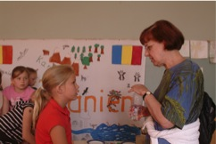
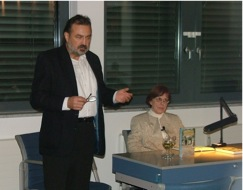
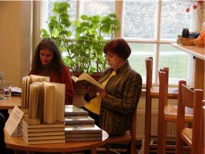
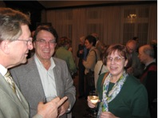
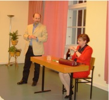

2008
Lesungen in Schulen, z.B. Eisenhart-Schule in Potsdam

Lesung im Haus des Deutschen Ostens in München
Museum Europäischer Kulturen, Staatliche Museen zu Berlin: Lesung im Rahmen der Ausstellung "Europa entdecken"
2007
Mosse Palais, Berlin-Mitte: Lesung aus beiden Büchern. Organisiert von der Deutschen Gesellschaft e.V.

Treffen der Kulturreferenten Baden-Württembergs auf Schloss Horneck (Gundelsheim am Neckar): Lesung aus dem Buch "Der halbierte Stalin"
Drittes Hermannstädter Treffen in Landshut: Lesung aus "Der halbierte Stalin"
Berliner Rathaus (Rotes Rathaus): Lesung aus dem Buch "Der halbierte Stalin" im Rahmen der Veranstaltungsreihe zum Umgang mit dem kommunistischen Erbe in Europa. Die Veranstaltung wurde für den Offenen Kanal Berlin aufgezeichnet
Siebenbürger Sommerfest 2007 in Berlin: Lesung aus dem Buch "Der halbierte Stalin"
StudierendenCentrum Berlin: Lesung aus dem Buch "Das Mädchen von der Quelle" im Rahmen der Salonreihe: "Atmosphären der (In)Toleranz" zum Thema "Hermannstadts Vielfalt"
Dorotheenstädtische Buchandlung Berlin: Lesung aus dem Buch "Das Mädchen von der Quelle" und Interview für den Rumänischen Rundfunk
Teutsch-Haus, Hermannstadt/Sibiu (Rumänien): Vorstellung des Buches "Der halbierte Stalin. Hermannstädter Geschichten". Die Vorstellung wurde vom Rumänischen Fernsehen aufgenommen, ebenso das anschließende Interview

2006
Rumänisches Kulturinstitut Berlin: Lesung aus dem Buch "Das Mädchen von der Quelle"

Haus der Heimat, Stuttgart: Lesung aus dem Buch "Das Mädchen von der Quelle"
Evangelisches Gemeindehaus in Alt-Tempelhof, Berlin: Lesung unter dem Titel "Die Wahrsagerin" aus dem Buch "Das Mädchen von der Quelle" innerhalb des Literatur- und des Siebenbürgerkreises

hora-Verlag, Hermannstadt/Sibiu (Rumänien): Vorstellung des Buches "Das Mädchen von der Quelle"